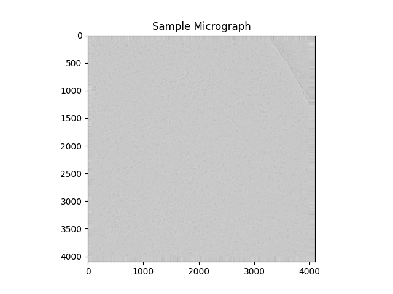
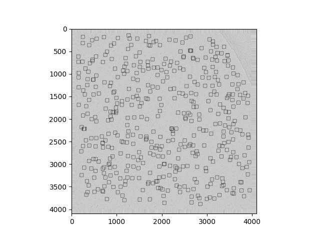

Note
Go to the end to download the full example code.
Apple Picker¶
We demonstrate ASPIRE’s particle picking methods using the Apple class.
import os
import matplotlib.pyplot as plt
import mrcfile
from aspire.apple.apple import Apple
Read and Plot Micrograph¶
Here we demonstrate reading in and plotting a raw micrograph.
file_path = os.path.join(
os.path.dirname(os.getcwd()), "data", "falcon_2012_06_12-14_33_35_0.mrc"
)
with mrcfile.open(file_path, mode="r") as mrc:
micro_img = mrc.data
plt.title("Sample Micrograph")
plt.imshow(micro_img, cmap="gray")
plt.show()

Initialize Apple¶
Initiate ASPIRE’s Apple class.
Apple admits many options relating to particle sizing and mrc processing.
apple_picker = Apple(
particle_size=78, min_particle_size=19, max_particle_size=156, tau1=710, tau2=7100
)
Pick Particles and Find Centers¶
Here we use the process_micrograph method from the Apple class to find particles in the micrograph.
It will also return an image suitable for display, and optionally save a jpg.
centers, particles_img = apple_picker.process_micrograph(file_path, create_jpg=True)
# Note that if you only desire ``centers`` you may call ``process_micrograph_centers(file_path,...)``.
0%| | 0/256 [00:00<?, ?it/s]
0%| | 1/256 [00:00<01:40, 2.53it/s]
1%| | 3/256 [00:00<00:35, 7.09it/s]
2%|▏ | 5/256 [00:00<00:34, 7.22it/s]
3%|▎ | 7/256 [00:00<00:31, 8.00it/s]
4%|▎ | 9/256 [00:01<00:31, 7.80it/s]
4%|▍ | 11/256 [00:01<00:29, 8.38it/s]
5%|▌ | 13/256 [00:01<00:31, 7.75it/s]
6%|▋ | 16/256 [00:02<00:27, 8.61it/s]
7%|▋ | 18/256 [00:02<00:28, 8.26it/s]
8%|▊ | 20/256 [00:02<00:27, 8.73it/s]
9%|▊ | 22/256 [00:02<00:26, 8.71it/s]
9%|▉ | 23/256 [00:02<00:27, 8.61it/s]
9%|▉ | 24/256 [00:02<00:26, 8.83it/s]
10%|█ | 26/256 [00:03<00:28, 8.10it/s]
11%|█ | 28/256 [00:03<00:26, 8.72it/s]
12%|█▏ | 30/256 [00:03<00:26, 8.68it/s]
12%|█▎ | 32/256 [00:03<00:26, 8.60it/s]
13%|█▎ | 34/256 [00:04<00:26, 8.46it/s]
14%|█▍ | 36/256 [00:04<00:26, 8.45it/s]
15%|█▍ | 38/256 [00:04<00:24, 8.95it/s]
16%|█▌ | 40/256 [00:04<00:26, 8.29it/s]
16%|█▋ | 42/256 [00:05<00:25, 8.36it/s]
17%|█▋ | 44/256 [00:05<00:26, 7.86it/s]
18%|█▊ | 47/256 [00:05<00:25, 8.15it/s]
19%|█▉ | 48/256 [00:05<00:25, 8.32it/s]
20%|█▉ | 50/256 [00:05<00:21, 9.78it/s]
20%|██ | 52/256 [00:06<00:24, 8.33it/s]
21%|██ | 54/256 [00:06<00:26, 7.75it/s]
22%|██▏ | 56/256 [00:06<00:21, 9.32it/s]
23%|██▎ | 58/256 [00:06<00:23, 8.48it/s]
23%|██▎ | 59/256 [00:07<00:25, 7.87it/s]
23%|██▎ | 60/256 [00:07<00:23, 8.20it/s]
24%|██▍ | 61/256 [00:07<00:23, 8.31it/s]
25%|██▍ | 63/256 [00:07<00:22, 8.51it/s]
25%|██▌ | 65/256 [00:07<00:22, 8.39it/s]
26%|██▌ | 67/256 [00:08<00:23, 8.06it/s]
27%|██▋ | 69/256 [00:08<00:22, 8.48it/s]
28%|██▊ | 71/256 [00:08<00:20, 8.98it/s]
29%|██▊ | 73/256 [00:08<00:23, 7.91it/s]
30%|██▉ | 76/256 [00:09<00:20, 8.74it/s]
30%|███ | 78/256 [00:09<00:21, 8.39it/s]
31%|███▏ | 80/256 [00:09<00:20, 8.57it/s]
32%|███▏ | 82/256 [00:09<00:19, 8.89it/s]
33%|███▎ | 84/256 [00:10<00:22, 7.78it/s]
34%|███▎ | 86/256 [00:10<00:18, 9.26it/s]
34%|███▍ | 88/256 [00:10<00:19, 8.67it/s]
35%|███▌ | 90/256 [00:10<00:21, 7.86it/s]
36%|███▌ | 92/256 [00:10<00:17, 9.33it/s]
37%|███▋ | 94/256 [00:11<00:18, 8.80it/s]
38%|███▊ | 96/256 [00:11<00:17, 8.93it/s]
38%|███▊ | 97/256 [00:11<00:21, 7.34it/s]
39%|███▊ | 99/256 [00:11<00:17, 9.20it/s]
39%|███▉ | 101/256 [00:12<00:16, 9.44it/s]
40%|████ | 103/256 [00:12<00:17, 8.63it/s]
41%|████ | 104/256 [00:12<00:19, 7.74it/s]
41%|████▏ | 106/256 [00:12<00:18, 8.14it/s]
42%|████▏ | 108/256 [00:12<00:18, 8.01it/s]
43%|████▎ | 110/256 [00:13<00:17, 8.36it/s]
43%|████▎ | 111/256 [00:13<00:17, 8.39it/s]
44%|████▍ | 113/256 [00:13<00:14, 9.79it/s]
45%|████▍ | 115/256 [00:13<00:16, 8.70it/s]
45%|████▌ | 116/256 [00:13<00:18, 7.51it/s]
46%|████▌ | 118/256 [00:14<00:17, 7.74it/s]
47%|████▋ | 120/256 [00:14<00:16, 8.41it/s]
48%|████▊ | 122/256 [00:14<00:15, 8.45it/s]
48%|████▊ | 124/256 [00:14<00:16, 8.18it/s]
49%|████▉ | 126/256 [00:15<00:16, 7.67it/s]
50%|█████ | 129/256 [00:15<00:13, 9.14it/s]
51%|█████ | 130/256 [00:15<00:16, 7.82it/s]
52%|█████▏ | 133/256 [00:15<00:15, 7.88it/s]
53%|█████▎ | 135/256 [00:16<00:13, 9.24it/s]
54%|█████▎ | 137/256 [00:16<00:14, 8.09it/s]
54%|█████▍ | 139/256 [00:16<00:14, 8.24it/s]
55%|█████▍ | 140/256 [00:16<00:14, 8.12it/s]
55%|█████▌ | 142/256 [00:17<00:13, 8.35it/s]
56%|█████▌ | 143/256 [00:17<00:14, 7.93it/s]
57%|█████▋ | 145/256 [00:17<00:13, 8.23it/s]
57%|█████▋ | 146/256 [00:17<00:12, 8.52it/s]
58%|█████▊ | 148/256 [00:17<00:13, 8.26it/s]
59%|█████▊ | 150/256 [00:18<00:13, 7.80it/s]
59%|█████▉ | 152/256 [00:18<00:12, 8.45it/s]
60%|██████ | 154/256 [00:18<00:12, 8.42it/s]
61%|██████ | 156/256 [00:18<00:12, 7.93it/s]
62%|██████▏ | 158/256 [00:19<00:12, 7.95it/s]
62%|██████▎ | 160/256 [00:19<00:11, 8.45it/s]
63%|██████▎ | 162/256 [00:19<00:12, 7.34it/s]
64%|██████▍ | 165/256 [00:19<00:10, 8.68it/s]
65%|██████▍ | 166/256 [00:20<00:11, 7.70it/s]
66%|██████▌ | 168/256 [00:20<00:09, 9.48it/s]
66%|██████▋ | 170/256 [00:20<00:10, 8.41it/s]
67%|██████▋ | 171/256 [00:20<00:11, 7.62it/s]
68%|██████▊ | 173/256 [00:20<00:10, 7.99it/s]
68%|██████▊ | 174/256 [00:20<00:10, 7.50it/s]
69%|██████▉ | 177/256 [00:21<00:09, 8.27it/s]
70%|██████▉ | 179/256 [00:21<00:08, 8.81it/s]
71%|███████ | 181/256 [00:21<00:09, 7.90it/s]
71%|███████▏ | 183/256 [00:22<00:08, 8.57it/s]
72%|███████▏ | 184/256 [00:22<00:08, 8.55it/s]
73%|███████▎ | 186/256 [00:22<00:07, 9.53it/s]
73%|███████▎ | 187/256 [00:22<00:09, 7.40it/s]
74%|███████▍ | 189/256 [00:22<00:07, 9.35it/s]
75%|███████▍ | 191/256 [00:22<00:08, 7.93it/s]
75%|███████▌ | 193/256 [00:23<00:07, 8.34it/s]
76%|███████▌ | 194/256 [00:23<00:07, 8.24it/s]
77%|███████▋ | 196/256 [00:23<00:07, 8.35it/s]
77%|███████▋ | 197/256 [00:23<00:06, 8.45it/s]
78%|███████▊ | 199/256 [00:23<00:07, 7.85it/s]
79%|███████▊ | 201/256 [00:24<00:06, 8.35it/s]
79%|███████▉ | 203/256 [00:24<00:06, 8.36it/s]
80%|████████ | 205/256 [00:24<00:06, 8.44it/s]
81%|████████ | 207/256 [00:24<00:06, 8.15it/s]
82%|████████▏ | 209/256 [00:25<00:05, 8.27it/s]
82%|████████▏ | 211/256 [00:25<00:05, 8.62it/s]
83%|████████▎ | 213/256 [00:25<00:04, 8.83it/s]
84%|████████▍ | 215/256 [00:25<00:04, 8.32it/s]
85%|████████▍ | 217/256 [00:26<00:04, 8.48it/s]
85%|████████▌ | 218/256 [00:26<00:04, 8.24it/s]
86%|████████▌ | 220/256 [00:26<00:04, 8.76it/s]
87%|████████▋ | 222/256 [00:26<00:04, 8.17it/s]
88%|████████▊ | 224/256 [00:26<00:03, 8.63it/s]
88%|████████▊ | 226/256 [00:27<00:03, 8.09it/s]
89%|████████▉ | 228/256 [00:27<00:03, 8.87it/s]
90%|████████▉ | 230/256 [00:27<00:03, 8.13it/s]
91%|█████████ | 232/256 [00:27<00:02, 8.90it/s]
91%|█████████▏| 234/256 [00:28<00:02, 7.45it/s]
93%|█████████▎| 237/256 [00:28<00:02, 8.74it/s]
93%|█████████▎| 238/256 [00:28<00:02, 7.66it/s]
94%|█████████▍| 241/256 [00:28<00:01, 8.22it/s]
95%|█████████▍| 243/256 [00:29<00:01, 8.31it/s]
96%|█████████▌| 245/256 [00:29<00:01, 8.49it/s]
96%|█████████▋| 247/256 [00:29<00:01, 8.34it/s]
97%|█████████▋| 249/256 [00:29<00:00, 8.31it/s]
98%|█████████▊| 251/256 [00:30<00:00, 8.61it/s]
99%|█████████▉| 253/256 [00:30<00:00, 8.36it/s]
99%|█████████▉| 254/256 [00:30<00:00, 8.38it/s]
100%|██████████| 256/256 [00:30<00:00, 10.17it/s]
100%|██████████| 256/256 [00:30<00:00, 8.36it/s]
Plot the Picked Particles¶
Observe the number of particles picked and plot the result from Apple.
img_dim = micro_img.shape
particles = centers.shape[0]
print(f"Dimensions of the micrograph are {img_dim}")
print(f"{particles} particles were picked")
plt.imshow(particles_img, cmap="gray")
plt.show()

Dimensions of the micrograph are (4096, 4096)
461 particles were picked
Total running time of the script: (0 minutes 43.762 seconds)